Research
TransDec - A BigData Management Framework
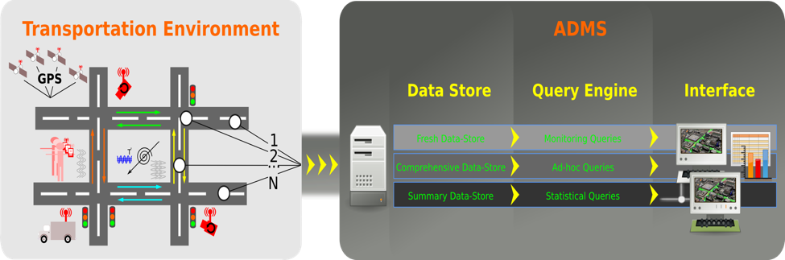
TransDec is a BigData system that enables real-time acquisition, querying, and analysis of highly dynamic and high resolution multidimensional datasets. TransDec - with 11TB annual growth rate - currently provides over 5 years of data for historical analysis and machine learning. As a case study for this framework, we have focused on traffic and vehicle sensor data collected in greater Los Angeles County. In particular, the system collects and fuses data from the following sources (sensors):
Traffic Detectors: About 20,000 sensors located on the highways and arterial streets collect traffic information such as occupancy, volume, and speed at the rate of one reading/sensor/min.
GPS: 2,036 busses and 35 trains operating in 145 different routes in Los Angeles County provide geospatial location data for every 30 seconds to two minutes.
Ramp Meters: 1851 ramp meters that regulate the flow of traffic entering into highways at the rate of one reading/sensor/min.
Changeable Message Signs (CMS): 160 CMS that give travelers information about road conditions such as delays, accidents, and roadwork zones with varying update rate.
Events: Detailed free-text format information about special events such as collisions, traffic hazards, and so on acquired from three different agencies. TransDec collects approximately 400 events per day.
Deployed on Spark and NoSQL databases, TransDec addresses fundamental data management challenges such as effective management of dynamic and large scale data, and efficient processing of real-time and historical spatiotemporal queries.
________________________________________________________________________________________________
Travics - Traffic Flow and Event Impact Prediction in Time-series Data
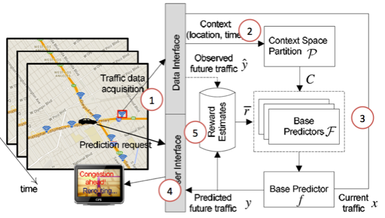
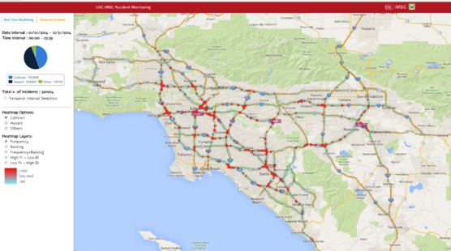
The focus of this research is to build and train machine learning algorithms for large-scale time-series (and spatial time-series) prediction – both under normal conditions and with disruptions. Travics uses streaming traffic sensor data as the case study. With Travics we have developed machine learning algorithms that can not only predict traffic flow, but also quantify the impact of events (i.e., disruptions) such as accidents and social occasions (e.g., sporting games, concerts) in road networks. We’ve developed these algorithms based on ARIMA (2012-2013), Context Aware Multi-arm Bandit (2014), Latent Space Modeling (2015), and recently Deep Learning (2016). More specifically, our algorithms predict short and long term traffic speeds on road segments by considering a variety of multidimensional and multivariate variables in dynamic transportation environments. In addition to these, we have also implemented on event impact prediction algorithms which foresee and quantify the propagation of backlog (in distance) and travel-time delays due to events such as traffic accidents or social events.
________________________________________________________________________________________________
Predictive Route Planning
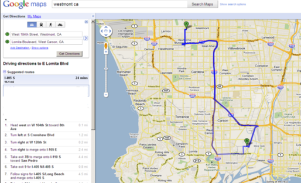
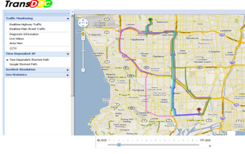
A combination of navigation services are currently used by drivers country-wide to find the route that minimizes travel-time. For example, online maps (e.g., Google Maps, Bing Maps) help us to determine the fastest path ahead of our journey. While in-car GPS navigation and Smartphone applications (e.g., Waze) calculates our path and updates it during the drive using real-time traffic information. These kind of services however, based on our research, have two main shortcomings. First, online map applications offer paths based on the assumption that traffic conditions remain constant during the entire trip. Those that integrate real-time traffic, such as in-car GPS navigation systems and Smartphone applications, can divert drivers from unexpected congestion but still, the new route provided assumes that all conditions remain constant from that moment on. This phenomenon is called “detect-and-react” and is just a suboptimal strategy for route planning applications. The ideal system should be based on ”predict-and-avoid” phenomenon, which can forecast the behavior of congestion before it is formed in order to avoid it before it impacts the driver. Second, while most of these applications enable the visualization of traffic events such as accidents, sports games, and construction zones, the event reports are for information only. The behavior of these events, however, is ignored in route planning, and the drivers are expected to out-smart the traffic due to events. Our research addressed these challenges and developed predictive route planning where edge weights are a function of time that considers time-dependent traffic patterns and impact of events.
________________________________________________________________________________________________
ClearPath
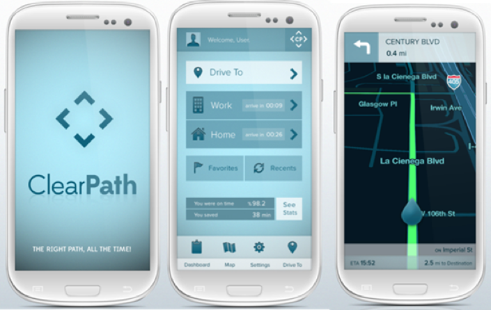
ClearPath is a next-generation mobile and web based predictive route planning application deployed in Los Angeles in 2010. ClearPath – built on more than 6 years of research - computes its routes based on predicted traffic as well as adjusted real-time road conditions. Our research shows that these techniques of predictive path planning saves drivers on average 18% travel-time. ClearPath includes several patented navigation applications such as enabling drivers to plan journeys up to 24 hours in advance (i.e., future departure-time based navigation) and providing the user a latest departure time to arrive at the destination at a specific time (i.e., arrival-time based navigation). ClearPath has been featured in several news articles and media channels including Voice of America, NPR, the New York Times, and Reuters. Further, some similar concepts that ClearPath coined in 2010 were incorporated by Google Maps in 2015. In December 2014, ClearPath has been licensed from USC by a group of investors for commercialization and rebranded as Tallygo!.
________________________________________________________________________________________________
K-Nearest Neighbor Search
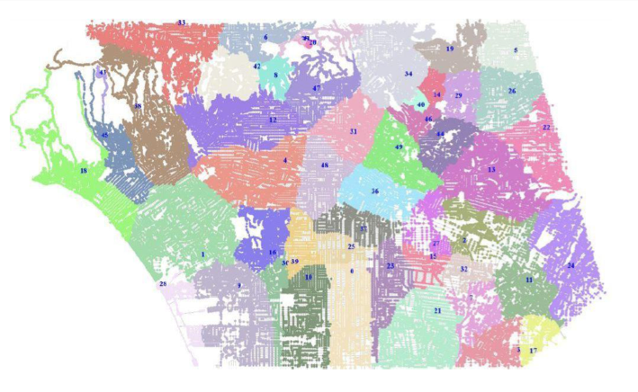
The ever growing popularity of online map services and their wide deployment in smart phones and car-navigation systems have led to extensive use of location-based services. One of the most popular class of such services is k-nearest neighbor (kNN) queries where users search for geographical points of interests and the corresponding directions and travel-times to these locations. The online nature of this services requires almost instant response time. Accordingly, many algorithms have been developed to speed up kNN search in road networks by using variety of pre-computation techniques. However, all the existing approaches and commercial services for kNN search in road networks make the simplifying assumption that the fastest path between any two nodes in the network is unique by assuming the weight of each edge in the road network is constant. This assumption makes pre-computation techniques feasible in terms of both preprocessing time and storage complexity. However, in real-world, the actual travel-time on network edges depends on the arrival-time to that edge - i.e., travel-time is time-dependent, and hence the fastest path between any nodes is not unique. It is impractical to extend existing pre-computation techniques to time-dependent road networks because input size (i.e., super-polynomial number of fastest paths) would increase drastically by yielding exponential pre-computation time and prohibitively large storage requirements. Our research coined the problem of kNN search in time-dependent spatial networks where the weight of each edge is a function of arrival-time, and an algorithm based on two novel indexing schemes - Tight Network Index (TNI) and Loose Network Index (LNI) - that enables efficient kNN search. The main idea of the algorithm is to localize the search and reduce the problem to a point location problem by decoupling the process of computing k nearest neighbors from the invocation of expensive distance computation in network space.
________________________________________________________________________________________________
Indexing Network Structures
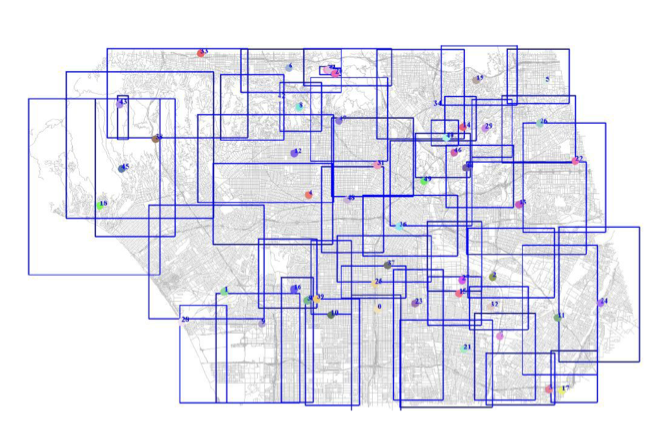
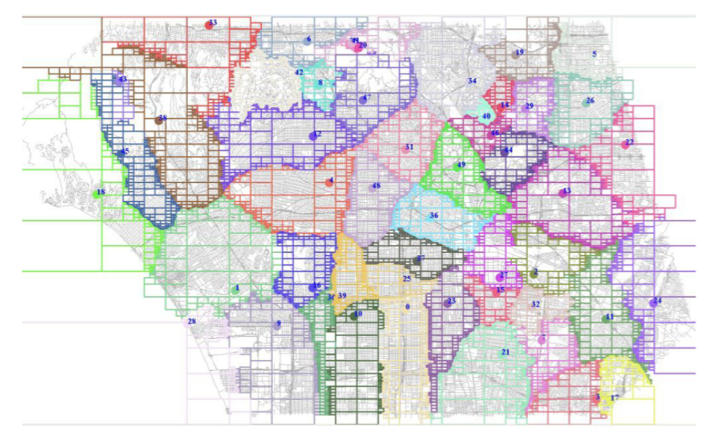
Network Voronoi diagrams and its variants have been extensively used in the context of numerous spatial and social network applications - particularly to efficiently evaluate various proximity queries such as k nearest neighbor (kNN), reverse kNN, service areas, and closest pair. Although the existing approaches successfully utilize the network Voronoi diagram as a way to partition the space for their specific problems, there is no emphasis on how to efficiently find and access the network Voronoi cell containing a particular point or edge of the network. In this research, we have studied the index structures on network Voronoi diagrams that enable exact and fast response to contain query in road networks. We show that existing index structures, treating a network Voronoi cell as a simple polygon, may yield inaccurate results due to the network topology, and fail to scale to large networks with numerous Voronoi generators. With our method, termed Voronoi-Quad-tree (or VQ-tree for short), we use Quad-tree to index network Voronoi diagrams to address both of these shortcomings.
________________________________________________________________________________________________
Uncertain Time-Series Databases
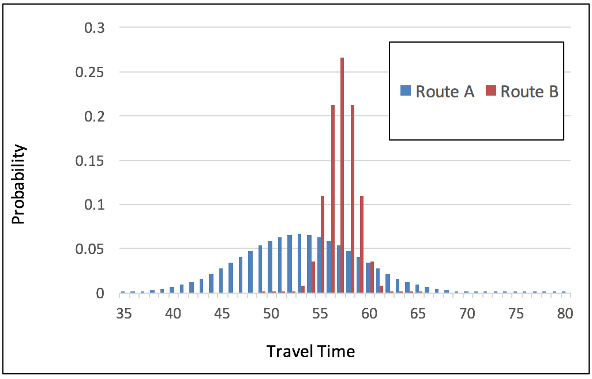
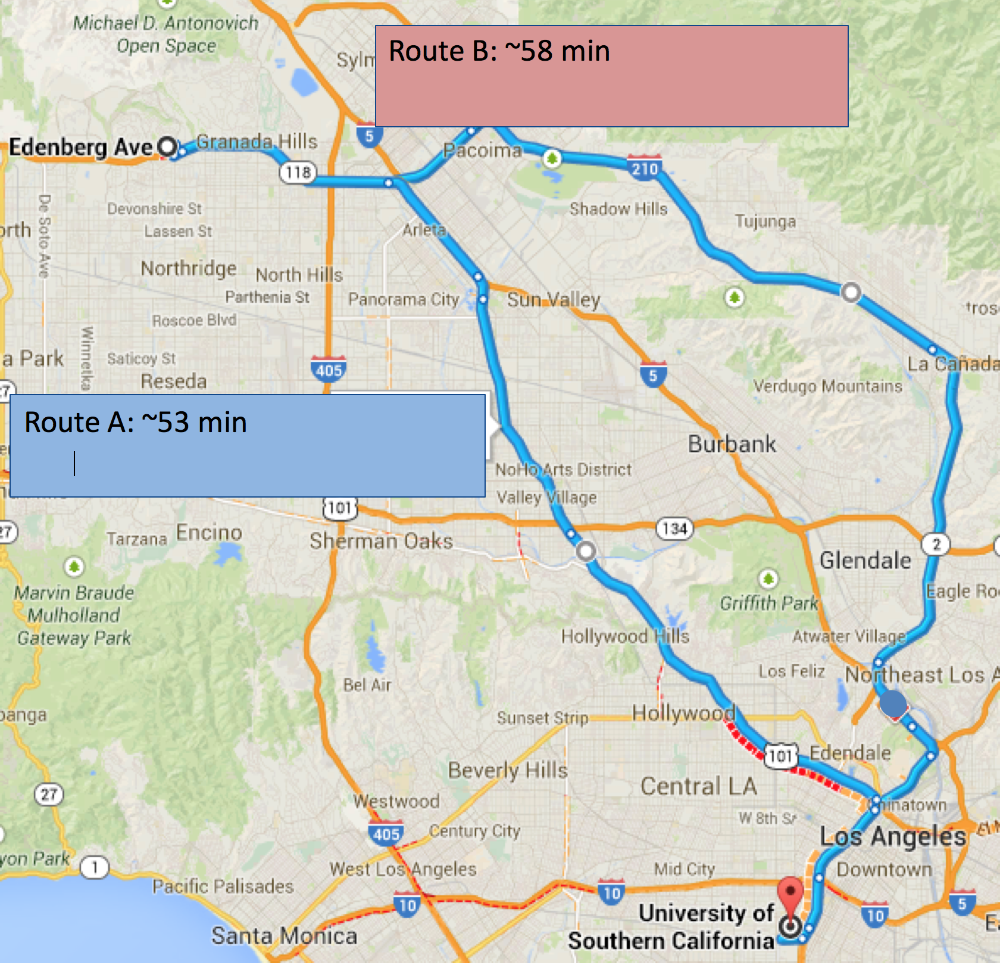
Time-series data, usually collected from sensors, contains noise that makes it deviate from the correct, intended or original values. In the age of BigData uncertainty or data veracity is one of the defining characteristics of data. This holds true for any optimization and estimation made in road networks using traffic sensor data. For example, the best route - provided by online maps or car navigation systems – may not be necessarily the best route as it carries a high level of uncertainty. This is because accurate estimation of travel time is not always possible since there are too many influencing factors like road conditions, accidents, weather, and other unexpected events. Unfortunately, existing online map and car navigation systems ignore such inherent uncertainty in road networks. Our goal in this research is to associate a reliability factor to routes and travel-times, or in other words compute the routes that show the least variation in travel-time. The most reliable route is desirable when traveling with a deadline, e.g., to reach a flight at the airport or to arrive on time for an important meeting. To find the most reliable route, we compute the probability distribution of travel times in the network, which requires an estimation of travel time probability distributions (that have been observed before in historical data) for each and every link, given a link-entrance-time.
________________________________________________________________________________________________
FleetR - Multiple Vehicle Routing for Fleets
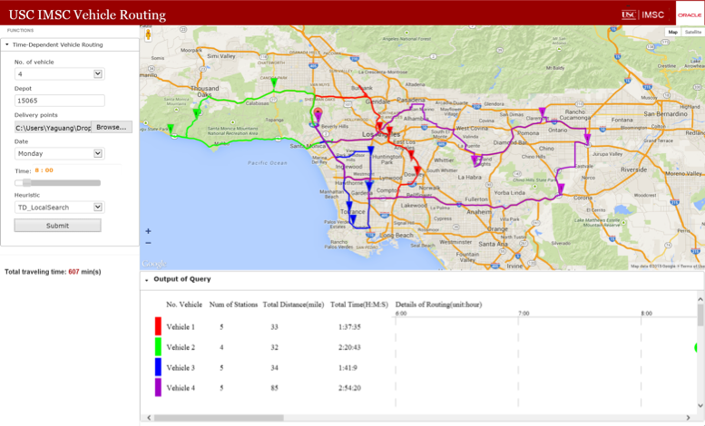
Due to recent technological advancements, e-commerce competition, and crowdsourcing business models, delivery and courier services are entering a period of rapid change. These changes impose new challenges to the well-studied vehicle routing problem by demanding:
a) more ad-hoc and near real time computation (e.g., Google Express, Amazon Now, Uber Rush) - as opposed to nightly batch jobs - of delivery routes for large number of delivery locations
b) the ability to deal with the dynamism due to the changing traffic conditions on road networks.
In this research, we have studied a Time-Dependent Vehicle Routing Problem (TDVRP) algorithm that enables both efficient and accurate solutions for a fleet of vehicles of fixed capacity on real world road networks. Previous Operation Research (OR) approaches fall short to address aforementioned challenges because they rely on a time-consuming data-preparation phase (where a cost matrix is computed for every pair of delivery locations at each time interval). Instead, our framework uses an on-the-fly shortest path computation, eliminating the OR data-preparation phase. To further improve efficiency, we use a novel local-search technique that adaptively selects more promising delivery locations and operators, reducing unnecessary searches.
________________________________________________________________________________________________
Map Matching
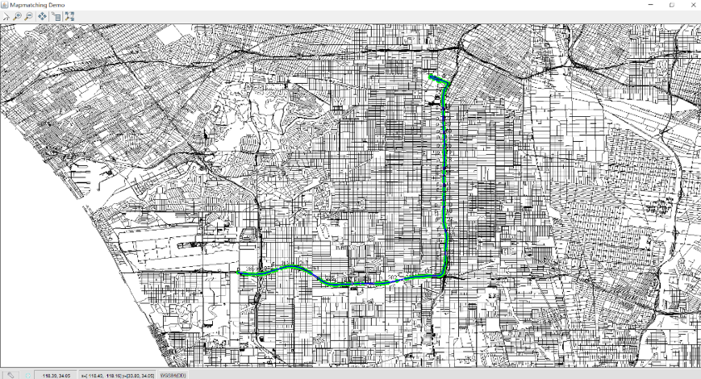
Over the past decade, we have seen a dramatic increase of GPS-embedded and hand-held navigation devices. These devices allow to accurately record the spatial displacement of moving objects. This dataset is extremely valuable for variety of Intelligent Transportation Systems application including, but not limited to, traffic flow analysis, route planning, and hot route-finders. Existing map-matching techniques cannot fully satisfy the increasing requirement of applications with massive trajectory data. Some local/increment map-matching methods are fast but generate inconsistent matching results since they ignore the correlation between subsequent points and topological information of the road network. However, more advanced map-matching methods (e.g., global approach and statistical approach) manage to be quite accurate, but suffer from high computational complexity. We have developed an efficient map-matching algorithm called Passby* that addresses the mentioned shortcoming. Instead of matching every single GPS point, we concentrate in on those close to intersections and avoid the computation of map-matching on intermediate GPS points which increases efficiency. Meanwhile, a probabilistic multi-hypothesis based method is developed to deal with the uncertainty of determining the real route of the moving object in situations of ambiguity. In this model, the probability of each hypothesis is inferred based on spatio-temporal information, and eventually the one with maximum likelihood is chosen as the solution.
________________________________________________________________________________________________
Trajectory Analysis
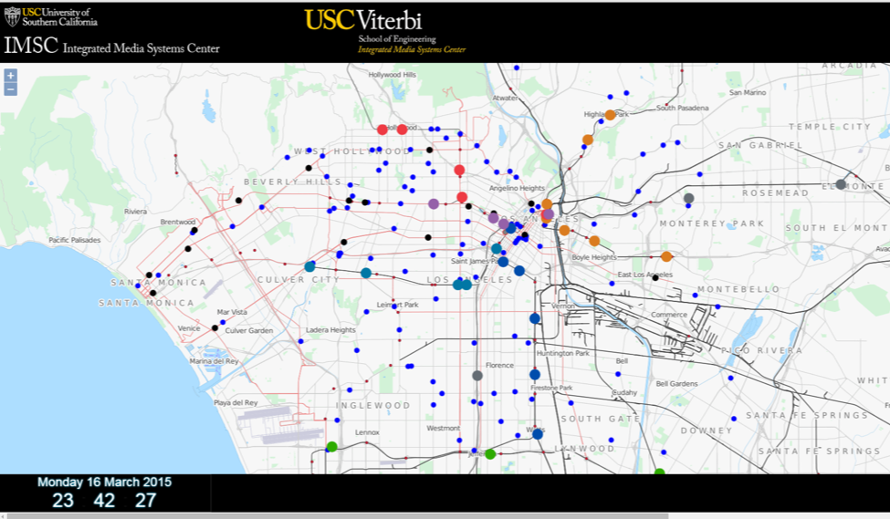
Trajectory based models are increasingly being used in variety of application domains - including car sharing platforms (e.g., Uber), autonomous cars and navigation - to assess the similarity of the moving objects towards optimizing variety of parameters. Our research involves effective storage and efficient querying
a) provide a holistic view of moving objects on the space
b) forecast the delay of the moving objects to a location using real-time traffic data
c) calculate the (on-time) reliability of moving objects using historical trajectory data
d) find the most similar trajectories
The movement of the busses are computed and approximated based on actual GPS data and (when not available) existing traffic conditions. By correlating GPS locations to traffic conditions on the routes of the busses, we have predicted the delay of the busses to their next stations. In addition, we have used 3 years of historical trajectory data from these busses to understand the on-time (to stations) reliability of the busses.
________________________________________________________________________________________________
Cloud Computing

Today’s high-end computer applications operate on massive data sets and require increasingly more computational power. In order to address this challenge, my research has tightly coupled modern query processing models and numerical solution algorithms, with the power of high performance parallel computers to build optimal computer architecture. One of the critical innovations of our research is to develop computational algorithms and quantitative models based on the architectural characteristics of state-of-the-art computer systems in order to achieve higher performance in numerical computations. Going off that, we have developed a Voronoi-based scalable distributed throwaway index structure that can be constructed in its entirety from scratch for very large datasets in a very short amount of time and in essence, answer queries in sub-seconds.
I have also conducted research in big-data management on distributed systems. The coordination and exploitation of such distributed computer system architecture is challenging; achieving computational balance among atomic computing units is even more challenging. I have developed set of techniques to process a variety of multidimensional data queries in distributed and parallel environments. Building on this research, I have developed real-world big-data management and analytics system on top of Spark to collect and store a very large-scale and high-resolution traffic sensor data retrieved from different transportation authorities in Southern California, including California Department of Transportation (Caltrans), Los Angeles Department of Transportation (LADOT), California Highway Patrol (CHP), Long Beach Transit (LBT). This data set, with more than 11TB annual growth, includes both inventory and real-time data with update rate as high as every 30 seconds.